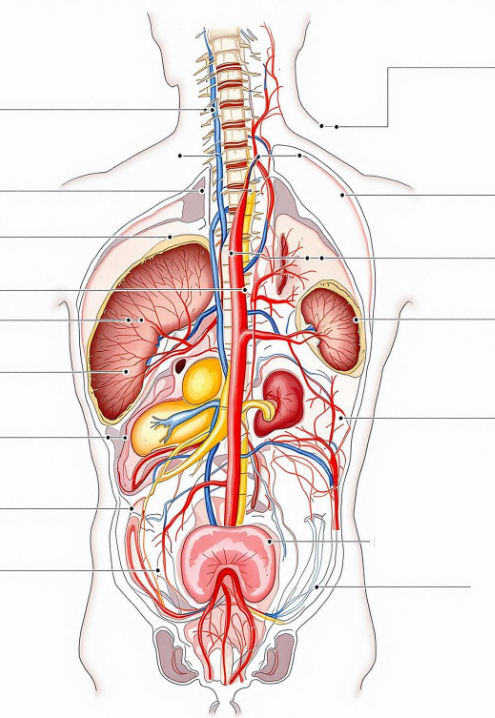

مراحل تكوين الجنين بالتفصيل
وردت مراحل نمو وتكوين الجنين في القرآن الكريم في قوله تعالى:
﴿يَا أَيُّهَا النَّاسُ إِن كُنتُمْ فِي رَيْبٍ مِّنَ الْبَعْثِ فَإِنَّا خَلَقْنَاكُم مِّن تُرَابٍ ثُمَّ مِن نُّطْفَةٍ ثُمَّ مِنْ عَلَقَةٍ ثُمَّ مِن مُّضْغَةٍ مُّخَلَّقَةٍ وَغَيْرِ مُخَلَّقَةٍ لِّنُبَيِّنَ لَكُمْ ۚ وَنُقِرُّ فِي الْأَرْحَامِ مَا نَشَاءُ إلى أَجَلٍ مُّسَمًّى ثُمَّ نُخْرِجُكُمْ طِفْلًا ثُمَّ لِتَبْلُغُوا أَشُدَّكُمْ ۖ﴾ [الحج: 5]، كما ورد كذلك في سورة المؤمنون في قول تعالى: ﴿وَلَقَدْ خَلَقْنَا الْإِنسَانَ مِن سُلَالَةٍ مِّن طِينٍ*ثُمَّ جَعَلْنَاهُ نُطْفَةً فِي قَرَارٍ مَّكِينٍ*ثُمَّ خَلَقْنَا النُّطْفَةَ عَلَقَةً فَخَلَقْنَا الْعَلَقَةَ مُضْغَةً فَخَلَقْنَا الْمُضْغَةَ عِظَامًا فَكَسَوْنَا الْعِظَامَ لَحْمًا ثُمَّ أَنشَأْنَاهُ خَلْقًا آخَرَ ۚ فَتَبَارَكَ اللَّهُ أَحْسَنُ الْخَالِقِينَ﴾ [المؤمنون: 12-14]
سيدتي-وطفلك/الحمل-والولادة/مراحل-تكوين-الجنين-في-القرآن-الكريم https://www.sayidaty.net/node/751486/
وهنا نقدم شرحا وافيا عن مراحل تكوين الجنين في القرآن:
الحيوان المنوي يحدد جنس الجنين
نحن نعلم أن بويضة الأم لا تحدد جنس الجنين لان نوع
كروموزوم الجنس في البويضة دائمًا يكون X لذلك جنس
الجنين يتحدد فقط بحسب نوع الكروموزوم الموجود في الحيوان المنوي. فان كان
من نوع Y فالجنين يكون ذكرًا وإن كان
كروموزوم X فجنس الجنين يكون أنثى.
الآن تأملوا الآية الكريمة التالية، ولاحظوا كيف نسبت جنس
المولود (ذكر أو أنثى) الى المني (والذي مصدره فقط الرجل)!
﴿وَأَنَّهُ خَلَقَ الزَّوْجَيْنِ الذَّكَرَ وَالْأُنثَىٰ (45) مِن نُّطْفَةٍ إِذَا تُمْنَىٰ﴾ (46)" سورة النجم
https://www.blogonlyscience.com/2024/05/blog-post_38.html
مرحلة النطفة
كلمة "نطفة" تعني قطرة من السائل، وتُشير في القرآن إلى المرحلة الأولى من تكون الجنين، حيث يكون في شكل خلية مفردة مخصبة. هذه المرحلة تتطابق مع ما يُعرف في علم الأجنة كمرحلة الإخصاب الأولى، حيث يلتقي الحيوان المنوي بالبويضة ويشكلان الخلية الأولى.
مرحلة العلقة
يُستخدم مصطلح "علقة" للدلالة على شيء يلتصق أو يمتص، وهو وصف دقيق للجنين الذي يتطور بعد ذلك ليصبح متصلاً بجدار الرحم ويتغذى منه، كما يحدث في الأسبوعين الثاني والثالث بعد الإخصاب. هذه المرحلة توافق مرحلة الزرع في علم الأجنة، حيث يلتصق الجنين بجدار الرحم.
مرحلة المضغة
كلمة "مضغة" تعني "قطعة لحم ممضوغ" وتصف الجنين في مرحلته التالية، حيث يبدأ في التكوين ليصبح كتلة غير منتظمة الشكل. هذه المرحلة تحدث في الأسبوع الرابع إلى السادس من الحمل، حيث يمكن رؤية تشكل الأنسجة والأعضاء الأساسية.
تخلُّق العظام قبل العضلات
ذكرت آيات القرآن الكريم أن العظام تتخلق قبل العضلات " فَخَلَقْنَا الْمُضْغَةَ عِظَامًا فَكَسَوْنَا الْعِظَامَ لَحْمًا " المؤمنون :14
وهو أمر صحيح علميًا، ففي الأسبوع الثالث بعد الإخصاب (او الأسبوع الخامس للحمل والذي يُحسب ابتداء من تاريخ آخر دورة شهرية)، تكون النطفة او البويضة المخصبة، عبارة عن حويصلة مجوفه ذات ثلاث طبقات من الأغشية Germ layers مرتبة فوق بعضها البعض.
في الأسبوع الثالث بعد الإخصاب، يكون الجنين عبارة عن حويصلة مجوفة ذات ثلاث طبقات من الأغشية Germ layers مُرتْبة فوق بعضها البعض. تٌسمَّى طبقة الخلايا الأكثر بعدًا من بطانة الرحم (الإكتودرم) ectoderm والطبقة الوسطى(الميزودرم) mesoderm وتٌسمَّى الطبقة الأقرب لبطانة الرحم ب (الإندورم) endoderm. تتمايز من الطبقة الوسطى(الميزودرم) خلايا مسؤوله عن بناء الجسم تسمى (الجسدية) somites والتي بدورها تنقسم الى ثلاث أنواع من الخلايا الجذعية المتخصصة:
dermatome تتمايز إلى الجلد والدهن.
myotome تتمايز إلى خلايا عضلية (عضلات الهيكل العظمي ، القلب ، الأوعية الدموية وغيرها).
Sclerotome تتمايز إلى خلايا العظام، الغضاريف والأوتار (وهي الألياف التي تربط بين العضلات أو بين العضلات والعظام).
أول ما يتمايز هي خلايا ال sclerotome وبذلك تتخلق خلايا العظام قبل خلايا العضلات (اللحم).
https://www.blogonlyscience.com/2024/05/blog-post_38.html
تحديد جنس الجنين من نطفة الرجل
كان الاعتقاد السائد منذ زمن نزول القرآن أن المرأة
الأم هي المسؤولة عن تحديد جنس المولود ولكن العلم يخبرنا بأن المرأة لا
علاقة لها بتحديد نوع المولود.
وقد كانت المراة تضرب و تهان في العصور الجاهلية اذا انجبت
انثى وكانت تدفن الطفلة وهي حية الى ان حرم الاسلام
ذلك.
تبين أخيراً أن نطفة الرجل هي المسؤولة عن تحديد نوع
الجنين، وليس البويضة الأنثى من تأثير على ذلك. فنطفة الرجل تحتوي على صفة
الذكورة أو الأنوثة سورة القيامة - تفسير الآيات 36 - 40
، أما بويضة المرأة فلا تحتوي إلا صفة الأنوثة
دائماً.
لذلك عندما تلتقي نطفة الرجل مع بويضة المرأة وتلقحها
يتحدد جنس الجنين حسب ما تحمله هذه النطفة، ولدينا احتمالان:
1ـ نطفة مذكرة مع بويضة مؤنثة: المولود ذكر.
2ـ نطفة مؤنثة مع بويضة مؤنثة: المولود أنثى.
القران اول من قال بعكس ما كان يعتقد لحد القرن
الماضي، القران قال بما يقول به علم الورا ثة
اليوم
يقول تعالى:
وَأَنَّهُ خَلَقَ الزَّوْجَيْنِ الذَّكَرَ وَالْأُنثَى * مِن نُّطْفَةٍ إِذَا تُمْنى﴾ (سورة النجم – الآية 46-45) ﴿
إذن الذكر والأنثى خلقهما الله من نطفة
الرجل
اية أخرى ﴿أَلَمْ يَكُ نُطْفَةً مِّن مَّنِيٍّ
يُمْنَىٰ ثُمَّ كَانَ عَلَقَةً فَخَلَقَ فَسَوَّىٰ فَجَعَلَ مِنْهُ ٱلزَّوْجَيْنِ ٱلذَّكَرَ
وَٱلأُنثَىٰ أَلَيْسَ ذَلِكَ بِقَادِرٍ عَلَىٰ أَن يُحْيِـيَ ٱلْمَوْتَىٰ﴾ )سورة القيامة - تفسير الآيات 36 –
40 (
 لاحظو معي
قوله تعالى: (فَجَعَلَ مِنْهُ الزَّوْجَيْنِ) ولم يقل: (فجعل منها الزوجين)، وهذه إشارة
إلى الرجل ونطفته وأنه هو المسؤول عن تحديد جنس الجنين، وهو ما أثبته
العلماء حديثاً
لاحظو معي
قوله تعالى: (فَجَعَلَ مِنْهُ الزَّوْجَيْنِ) ولم يقل: (فجعل منها الزوجين)، وهذه إشارة
إلى الرجل ونطفته وأنه هو المسؤول عن تحديد جنس الجنين، وهو ما أثبته
العلماء حديثاً
الإعجاز العلمي في يخرج بين الصلب والترائب:

"يَخْرُجُ مِن بَيْنِ الصُّلْبِ
وَالتَّرَائِبِ"
(سورة الطارق: الآية 7)
التفسير اللغوي والبلاغي:
"يخرج": يشير إلى خروج الماء الدافق (المني) الذي يُنتج الإنسان.
"من بين الصلب": الصلب هو عظام الظهر أو العمود الفقري.
"والترائب": الترائب هي عظام الصدر أو المنطقة الأمامية من جسم الإنسان.
الآية تشير إلى أن الماء الدافق الذي يُنتج الإنسان يخرج من منطقة بين الصلب (الظهر) والترائب (الصدر).
التوجيه العلمي:
.تفسير "يخرج من بين الصلب والترائب":
العلم الحديث أثبت أن الخصيتين، المسؤولة عن إنتاج الحيوانات المنوية، تتكونان في منطقة قريبة من الكليتين (بين الصلب والترائب) أثناء تطور الجنين في الرحم.
بعد ذلك، تنزل الخصيتان إلى مكانهما في كيس الصفن، لكنهما تظلان متصلتين بالأوعية الدموية والأعصاب التي تمتد إلى المنطقة القريبة من العمود الفقري (الصلب).
.الجهاز التناسلي الذكري:
الحيوانات المنوية تُنتج في الخصيتين، لكنها تعتمد على شبكة معقدة من الأوعية الدموية والأعصاب التي تمتد من منطقة الظهر (الصلب) إلى الحوض.
السائل المنوي يتكون من إفرازات من غدد مختلفة، مثل البروستاتا والحويصلات المنوية، التي تقع في منطقة الحوض، وهي قريبة من الترائب.
.الإعجاز في وصف العملية:
الآية تصف بدقة أن أصل الماء الدافق (المني) يرتبط بمنطقة بين الصلب والترائب، وهو ما يتفق مع التكوين الجنيني للخصيتين واتصالها التشريحي بالظهر والصدر.
أوجه الإعجاز العلمي:
الإشارة إلى التكوين الجنيني للخصيتين:
العلم الحديث أثبت أن الخصيتين تتكونان في منطقة قريبة من الكليتين (بين الصلب والترائب) قبل أن تنزل إلى كيس الصفن.
الدقة في وصف العملية:
القرآن الكريم أشار إلى منطقة "بين الصلب والترائب" كمصدر للماء الدافق، وهو ما يتفق مع التشريح الحديث للجهاز التناسلي الذكري.
التوافق مع العلم الحديث:
لم يكن من الممكن معرفة هذه التفاصيل الدقيقة عن تكوين الخصيتين وعلاقتها بالصلب والترائب في زمن نزول القرآن.
مراجع علمية وإسلامية:
كتب إسلامية:
"في ظلال القرآن" - سيد قطب
تفسير شامل يربط بين المعاني القرآنية والحقائق العلمية.
"التفسير الكبير" - الإمام فخر الدين الرازي
يناقش تفسير الآية من منظور بلاغي وعلمي.
"الإعجاز العلمي في القرآن والسنة" - د. زغلول النجار
يتناول الإعجاز العلمي في خلق الإنسان.
أبحاث علمية:
"Embryology and Testicular Descent" - مجلة Human Reproduction
دراسة عن تكوين الخصيتين أثناء تطور الجنين.
"The Anatomy of the Male Reproductive System" - مجلة Anatomy Journal
بحث عن الجهاز التناسلي الذكري وعلاقته بالظهر والحوض.
"Testicular Development and Migration" - مجلة Nature Reviews Urology
تقرير عن هجرة الخصيتين من منطقة الكلى إلى كيس الصفن.
مواقع إلكترونية:
موقع إسلام ويب - قسم التفسير
موقع الباحثون المسلمون